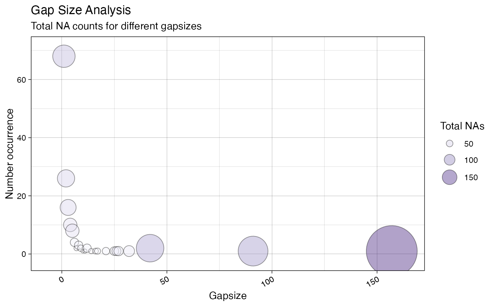
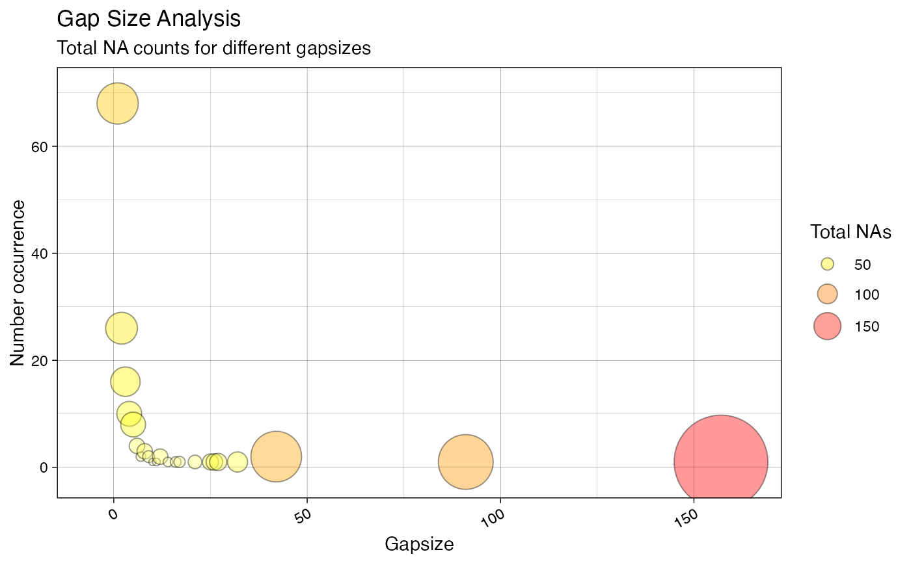
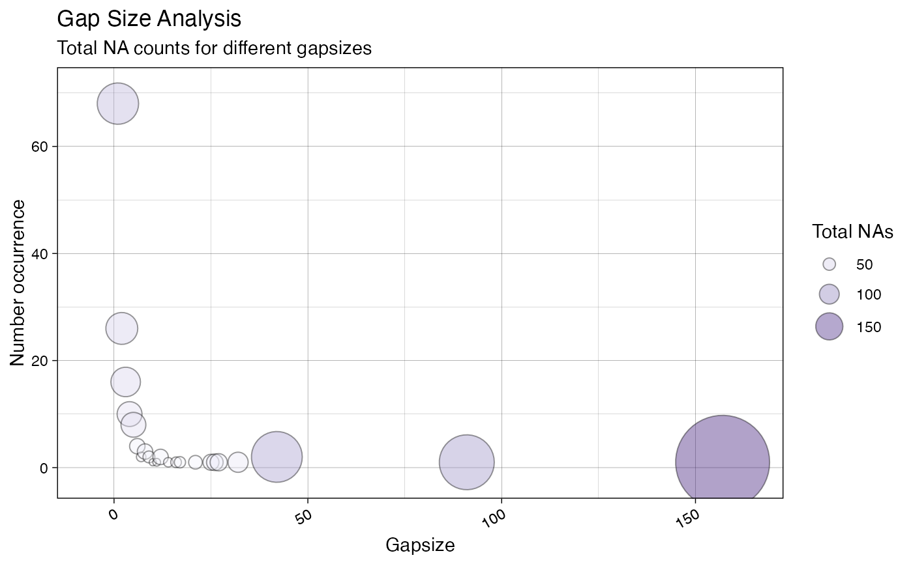
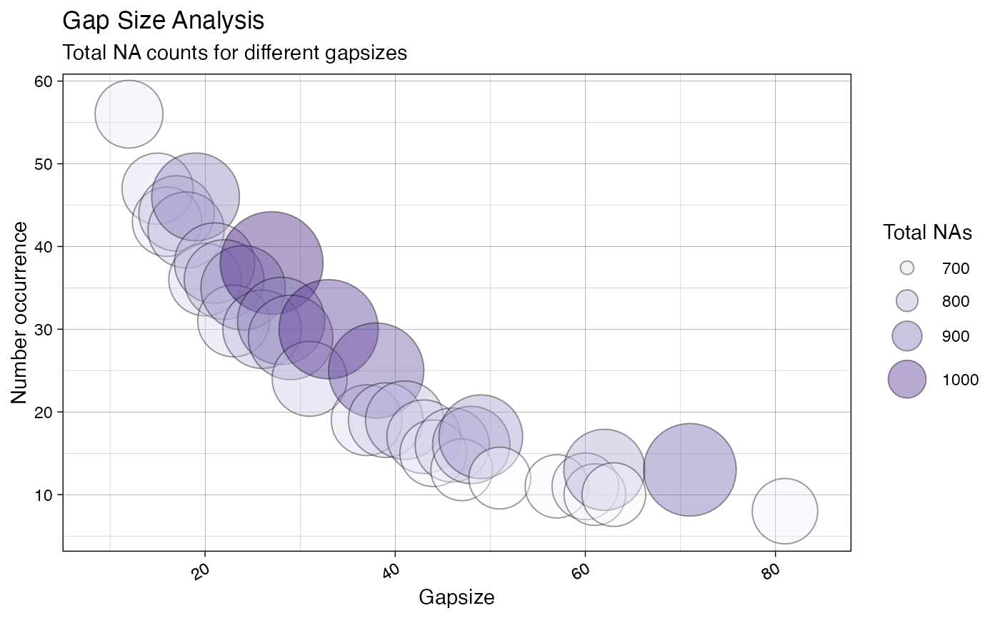
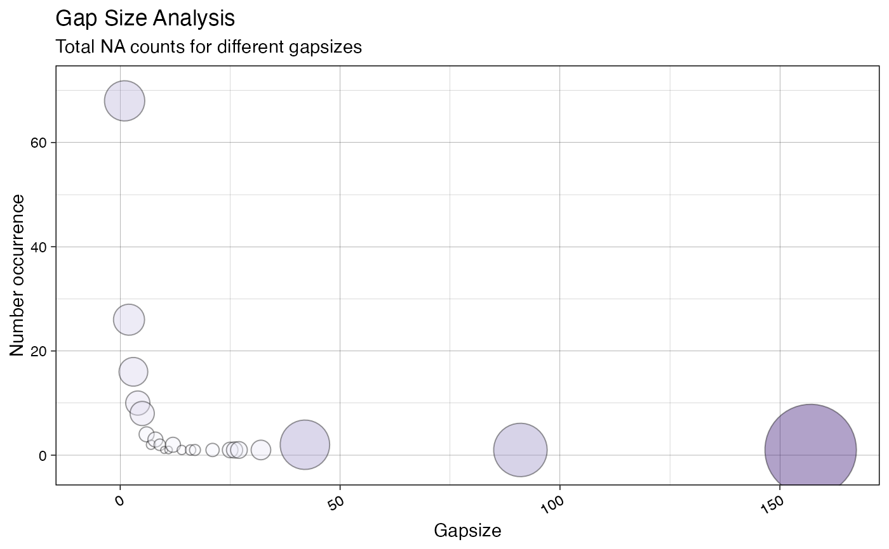
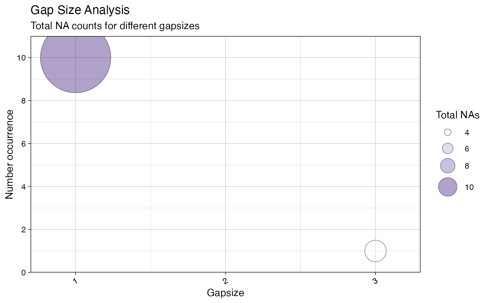
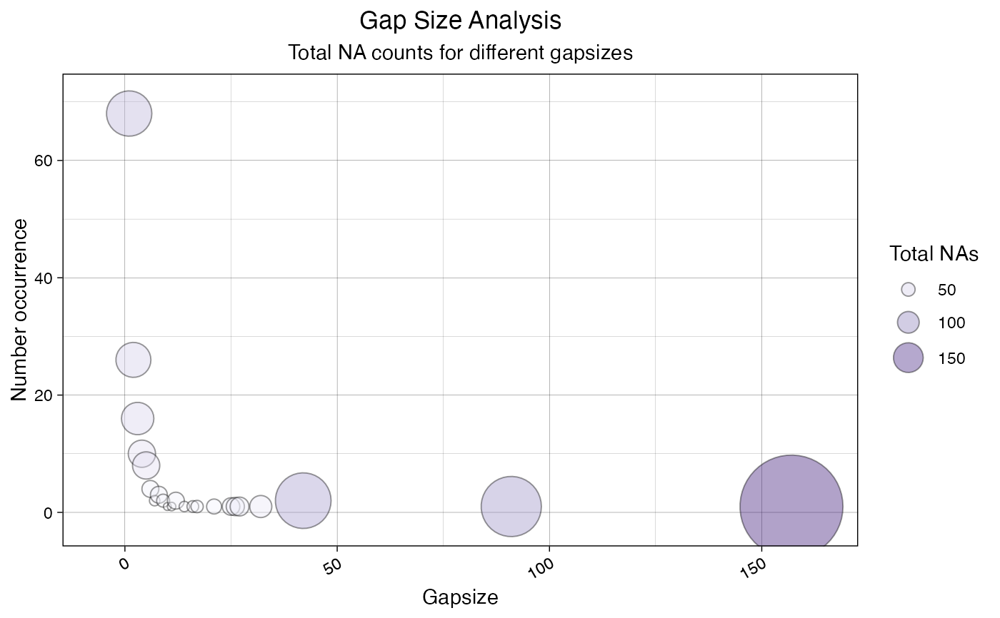
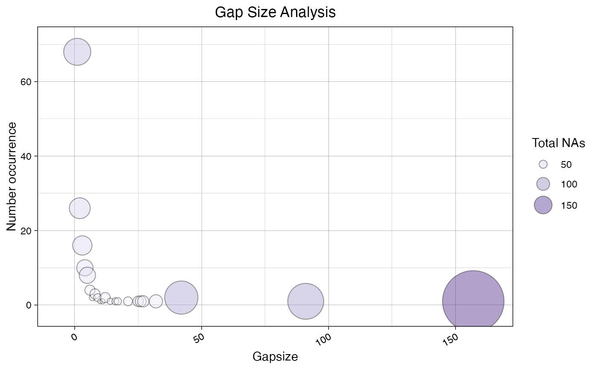
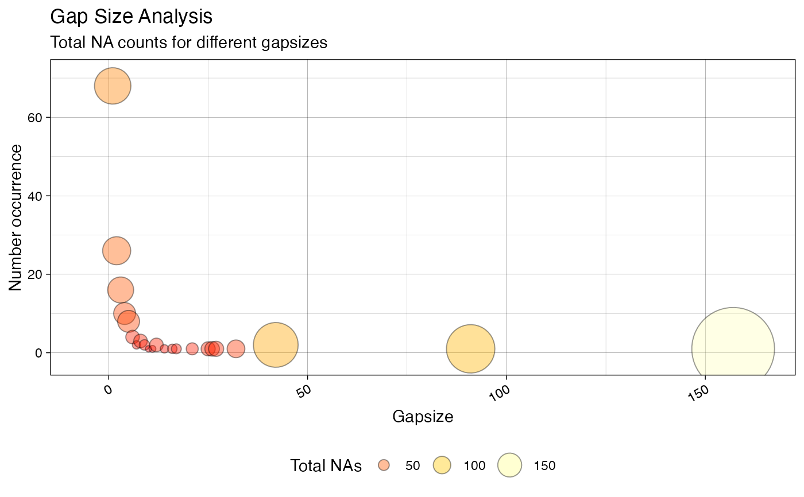

R/ggplot_na_gapsize2.R
ggplot_na_gapsize2.RdVisualize the total NA count (gap size * occurrence) for the existing gaps sizes (NAs in a row).
ggplot_na_gapsize2( x, colors_bubbles = c("#FCFBFF", "#EFEEFA", "#DDDAEF", "#C8C3E2", "#B1AAD4", "#9A8FC4", "#8273B5", "#6B56A7", "#553695", "#3D1778"), color_border = "black", alpha_bubbles = 0.4, labels_bubbles = "none", size_bubbles = 25, min_totals = NULL, min_occurrence = NULL, min_gapsize = NULL, max_gapsize = NULL, title = "Gap Size Analysis", subtitle = "Total NA counts for different gapsizes", xlab = "Gapsize", ylab = "Number occurrence", legend = TRUE, legend_breaks = 4, legend_title = "Total NAs", legend_position = "right", legend_point_sizes = "default", theme = ggplot2::theme_linedraw() )
| x | Numeric Vector ( |
|---|---|
| colors_bubbles | Choose a color gradient that encodes lower to higher total NA counts. Color codes can be given as vector. Using color palettes from colorspace, grDevices, RColorBrewer or other packages is useful here. E.g. grDevices::heat.colors(10) would be a possible input. |
| color_border | Color for the border of the bubbles. |
| alpha_bubbles | Alpha (transparency) value used for filling the bubbles. |
| labels_bubbles | Should labels be added to the individual bubbles inside the plot. For many datasets there will be overplotting issues once labels are added. In these cases using the min_gapsize, min_totals or min_occurrence options might be useful to only display the most relevant gap sizes. You can choose between these labels to be added:
The default setting is "none". |
| size_bubbles | Allows to scale the size of the bubbles. Some experimenting with this parameter might be needed to get a good visualization for your specific dataset. |
| min_totals | Only print bubbles for gap sizes that account for at least min_totals NAs in the time series. |
| min_occurrence | Only print bubbles for gap sizes that occur at least min_occurrence times in the time series. |
| min_gapsize | Only show gap sizes larger than min_gapsize. Together with max_gapsize enables zooming into in certain regions of interest. |
| max_gapsize | Only show gapsizes smaller than max_gapsize. Together with min_gapsize enables zooming into in certain regions of interest. |
| title | Title of the Plot. |
| subtitle | Subtitle of the Plot. |
| xlab | Label for x-Axis. |
| ylab | Label for y-Axis. |
| legend | If TRUE a legend is added on the right side |
| legend_breaks | Number of displayed breaks / labels in the legend. Needs an integer giving the desired number of breaks as input. Breakpoints are internally calculated by R's pretty() function, which can also lead to values slightly smaller or larger than the desired number. |
| legend_title | Defines the title of the legend. |
| legend_position | Defines position of the legend. Choose either 'bottom', right', 'left' or 'top'. |
| legend_point_sizes | Defines the size of the symbols representing the total NA bubbles in the legend. You can choose between "default", "actual" or a custom vector of sizes.
Since these two options are not be always sufficient, a custom vector of sizes can be used as input. This would look like this: c(4,5,6,7). Be aware, that the length of this vector must match the number of breakpoints (can be adjusted with legend_breaks). |
| theme | Set a theme for ggplot2. Default is ggplot2::theme_linedraw().
( |
The output is a ggplot2 object that can be
further adjusted by using the ggplot syntax
This function can be used to visualize the total NA counts for individual NA gap sizes (NAs in a row) in a time series. The bubble plot makes it easy to see, which gap sizes account for most of the NAs in the series. The size and color of the bubbles represents the total NAs a certain gap size accounts for.
Total NAs for a gap size is calculated the following: total NAs = occurrence * gap length
You could e.g. interpret a bubble for gap size 2 the following: A 2 NA-gap (2 NAs in a row) occurred 27 times in the time series and thus was responsible for 54 total NAs.
On the x-axis the different gap sizes are plotted in increasing order. The y-axis shows the occurrence count of these gap sizes in the time series.
The plot is useful for finding out more about possible root causes of the missing data. It can give an indication, if the missing data appears randomly or if there are certain patterns of interest.
Dependent on the time series input, there might be too much information in the plot, which leads to overplotting issues. In these cases, using the min_totals, min_occurrence, min_gapsize parameters can be used to display only the information of interest.
The only really needed parameter for this function is x (the univariate time series with NAs that shall be visualized). All other parameters are solely for altering the appearance of the plot.
As long as the input is univariate and numeric, the function also takes data.frame, tibble, tsibble, zoo, xts as an input.
The plot can be adjusted to your needs via the function parameters. Additionally, for more complex adjustments, the output can also be adjusted via ggplot2 syntax. This is possible, since the output of the function is a ggplot2 object. Also take a look at the Examples to see how adjustments are made.
ggplot_na_distribution,
ggplot_na_distribution2,
ggplot_na_gapsize,
ggplot_na_level,
ggplot_na_level2
Steffen Moritz
# Example 1: Visualize total NA counts in tsNH4 ggplot_na_gapsize2(tsNH4)# Example 2: Visualize total NA counts in tsNH4, different color gradient ggplot_na_gapsize2(tsNH4, colors_bubbles = rev(grDevices::heat.colors(10)))# Example 3: Same as example 1, just written with pipe operator tsNH4 %>% ggplot_na_gapsize2()# Example 4: Visualize total NA counts in tsHeating # Limited to gap sizes that account for a total of > 600 NAs ggplot_na_gapsize2(tsHeating, min_totals = 600)# Example 5: Visualize total NA counts in tsNH4 - no legend ggplot_na_gapsize2(tsNH4, legend = FALSE)# Example 6: Visualize total NA counts in tsAirgap - increased bubble size ggplot_na_gapsize2(tsAirgap, size_bubbles = 35)# Example 7: Visualize total NA counts in tsNH4 # Plot adjustments via ggplot_na_gapsize2 function parameters ggplot_na_gapsize2(tsNH4, theme = ggplot2::theme_classic())# Example 8: Visualize total NA counts in tsNH4 - title, subtitle in center # Plot adjustments via ggplot2 syntax ggplot_na_gapsize2(tsNH4) + ggplot2::theme(plot.title = ggplot2::element_text(hjust = 0.5)) + ggplot2::theme(plot.subtitle = ggplot2::element_text(hjust = 0.5))# Example 9: Visualize total NA counts in tsNH4 - title in center, no subtitle # Plot adjustments via ggplot2 syntax and function parameters ggplot_na_gapsize2(tsNH4, subtitle = NULL) + ggplot2::theme(plot.title = ggplot2::element_text(hjust = 0.5))# Example 10: Total NA counts in tsNH4 - legend on the bottom and color change # Plot adjustments via ggplot2 syntax and function parameters ggplot_na_gapsize2(tsNH4, colors_bubbles = grDevices::heat.colors(10)) + ggplot2::theme(legend.position = "bottom")